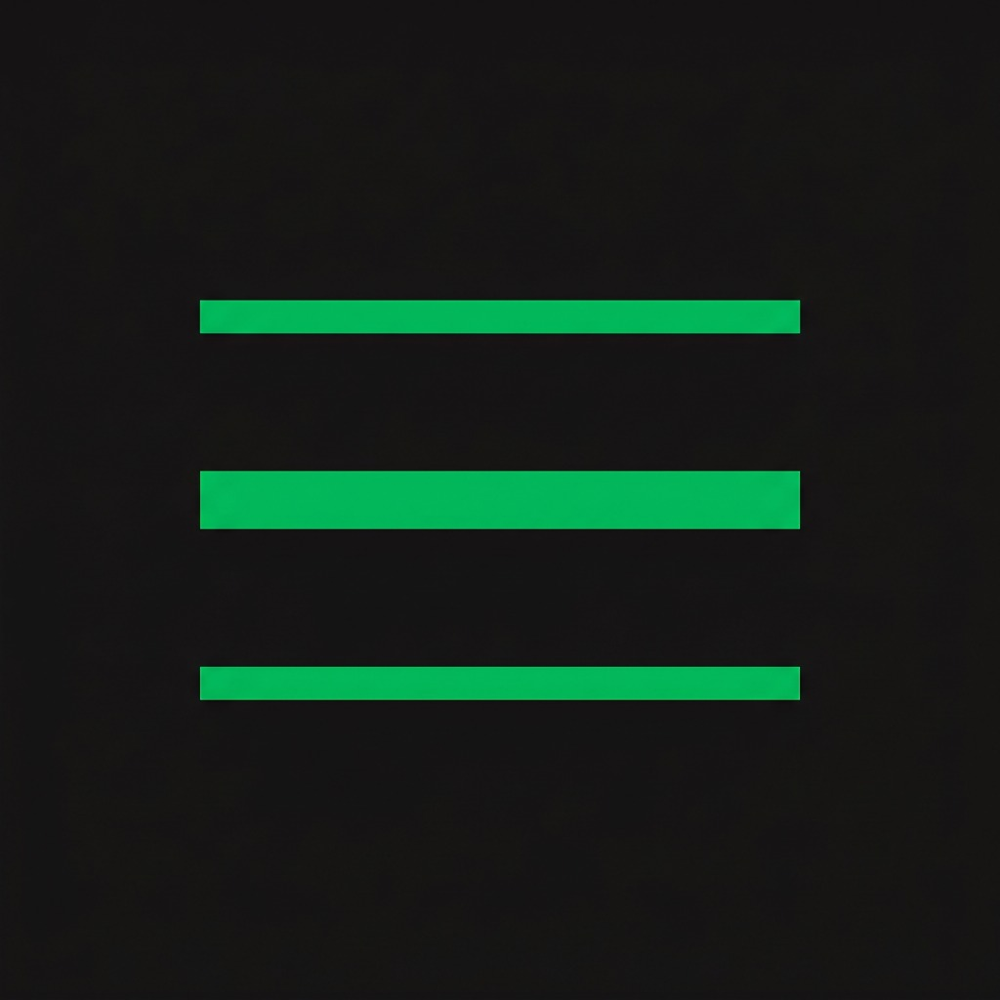

Kyoto Music is a high-fidelity web application built on Spring Boot and Java. The backend handles all routing, security interceptors, controller mappings, and transactional mailing, while the frontend is dynamically rendered server-side using Thymeleaf coupled with modern, responsive vanilla CSS. Engineered to support secure merchandise payment processing and high-volume media streaming at serverless edge speeds.



Kyoto Music
What’s under Kyoto Music’s hood? Which technologies were used and why did you choose them?
Kyoto Music is a high-fidelity web application built on Spring Boot and Java. The backend handles all routing, security interceptors, controller mappings, and transactional mailing, while the frontend is dynamically rendered server-side using Thymeleaf coupled with modern, responsive vanilla CSS.
We wanted an architecture that was robust enough for secure payment processing and high-volume media streaming, yet lightweight and fast to scale globally. By choosing to build Kyoto Music around Cloudflare's modern serverless edge architecture, we avoided bloated database servers and high hosting overhead.
All transactional and catalog data (including listener profiles, playlists, artist statistics, merchandise stock, and ticket transactions) is stored in Cloudflare D1—a serverless edge database built on SQLite. For media, instead of storing heavy audio files and high-res cover art on the web server, everything is hosted on Cloudflare R2 object storage. This ensures lightning-fast streaming speeds for listeners, zero egress fee expenses, and seamless uploads for artists.
Payments for merchandise and show tickets are handled safely via Paystack, and transactional receipts are delivered securely via JavaMailSender. The entire setup compiles with Maven and deploys automatically to Render directly from Git.

Spring Boot
Enterprise Java framework powering the core server, routing, and APIs
Thymeleaf
Modern server-side Java template engine used to dynamically render the user interface

Cloudflare D1
Serverless edge SQL database running on SQLite for ultra-fast, globally distributed data storage
Cloudflare R2
Fully S3-compatible serverless object storage for hosting audio files and graphics with zero egress fees
Paystack
Secure, modern payment gateway integration for buying merchandise and concert tickets
JavaMailSender
Transactional email service for delivering purchase receipts, sales notifications, and door tickets

Maven
Build automation and dependency management tool for clean, reproducible compilations

Render
Cloud hosting platform used for automated Git deployments, environment management, and scale